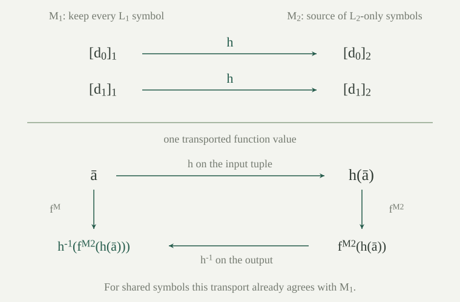

Fix a first-order language \(L\) and finite sets \(S_1,S_2\) of its nonlogical symbols, keeping each symbol's kind and arity. Let \(L_i=L\upharpoonright S_i\) be the supported sublanguage, and let \(L_0=L\upharpoonright(S_1\cap S_2)\). The common language is \(L_0\). Its inclusions into \(L_1,L_2\) are denoted \(j_1,j_2\), and the inclusions into \(L\) by \(i_1,i_2\). We write a common formula in either larger language without displaying these inclusions, but every occurrence means its symbol translation.
Equality and logical symbols belong to every language. Thus \(L_0\) still expresses \(\forall x\forall y\,(x=y)\), even when \(S_1\cap S_2=\varnothing\). We consider arbitrary theories \(T_i\) of \(L_i\)-sentences; only their vocabularies are finite. All structures are nonempty. Derivability always refers to the existing natural-deduction calculus.
A separator of \((T_1,T_2)\) is an \(L_0\)-sentence \(\theta\) such that \(T_1\vdash\theta\) and \(T_2\vdash\neg\theta\). Call the pair inseparable if it has no separator. By soundness and completeness, the same definition results from replacing both derivability signs by semantic consequence.
For the construction, take the same reserve \(D=\{d_0,d_1,\ldots\}\) of fresh constant names on both sides, and put \(L_i^+=L_i\cup D\), including \(i=0\). A named inseparable pair consists of sets \(U_i\) of \(L_i^+\)-sentences with no \(L_0^+\)-separator. In the shared scoped syntax, a sentence with these added constants is equivalently an \(L_i\)-formula whose free names are natural numbers. The interpretations of those names are part of the expanded structure; they are not universally bound inside the sentence.
An inseparable pair has consistent components. Passing to subsets preserves inseparability, and interchanging the two components preserves inseparability.
If the first component derives \(\bot\), it and the second component are separated by \(\bot\): the second derives \(\neg\bot\) without assumptions. If the second derives \(\bot\), use \(\top\), which the first derives without assumptions while the second derives its negation by explosion. The same reasoning applies to named pairs. A separator derived from smaller theories remains a separator of larger theories by weakening; this proves the subset assertion.
If \(\theta\) separates the reversed pair, then the original first component derives \(\neg\theta\), while its second derives \(\theta\) and hence \(\neg\neg\theta\). Thus \(\neg\theta\) separates the original pair. Applying this implication twice proves symmetry. These are ordinary propositional derivations in the fixed calculus.
Let \(A\) be a formula using an auxiliary name \(d\). Write \(\exists d\,A\) for the formula obtained by replacing exactly the free occurrences of that name by a new bound placeholder, then existentially quantifying it. Other free names and all existing placeholders are retained. For any structure interpreting the other names,
If \(d\) is absent from a theory \(U\) and \(U\vdash\neg A\), then \(U\vdash\neg\exists d\,A\). If \(U\vdash A\), then \(U\vdash\exists d\,A\). Binding several names in succession removes all of them.
The replacement is capture safe: the new placeholder occupies the outermost available slot, and entering any existing quantifier preserves that quantifier's slot. Structural induction gives the displayed satisfaction identity, using the usual substitution equation for the atomic cases. Existential introduction gives the second derivability assertion directly. For the first, take any model of \(U\). Changing the interpretation of \(d\) leaves every member of \(U\) true, by induction on those formulas, since they do not mention \(d\). Soundness therefore makes \(A\) false for every such interpretation. The displayed identity makes \(\exists d\,A\) false. Completeness in the expanded language gives the stated derivation.
This semantic use of completeness is legitimate: the theorem has already been proved. Equivalently one can generalize the fresh name and use the quantifier rules. Only finitely many names occur in a separator, so a finite succession of these operations suffices.
If \((T_1,T_2)\) is inseparable in \(L_0\), its translations to \(L_1^+,L_2^+\) are a named inseparable pair.
Suppose \(\theta\) were a separator after adding names. List all auxiliary names occurring in \(\theta\), and existentially bind them, obtaining an \(L_0\)-sentence \(\widehat\theta\). The first theory derives \(\widehat\theta\) by successive existential introductions. The second theory mentions none of these names, so gives its derivation of \(\neg\widehat\theta\). These are initially derivations in the expanded languages. Conservativity of language inclusions returns derivations in \(L_1,L_2\). This contradicts the original inseparability.
If \((U,V)\) is a named inseparable pair and \(A\) is a sentence in the first expanded language, then at least one of \((U\cup\{A\},V)\) and \((U\cup\{\neg A\},V)\) is inseparable. The corresponding assertion holds for a decision on the second side.
If both choices had separators, choose common sentences \(\theta,\eta\) with
From \(U\), split on the classical alternatives \(A,\neg A\). In the first branch derive \(\theta\vee\eta\) using \(\theta\), and in the second using \(\eta\). Discharge the split to obtain \(U\vdash\theta\vee\eta\). The two derivations from \(V\) give \(V\vdash\neg(\theta\vee\eta)\). Thus \(\theta\vee\eta\) was already a separator. This contradiction proves the claim. The split, weakening and discharge use the original finite proof rules, so the argument also applies to infinite theories. For the second side apply symmetry, make the decision, and interchange the sides back.
Let \((U,V)\) be a named inseparable pair, let \(\varphi(x)\) be a one-placeholder body in the first language, and let \(d\) occur in neither theory nor the body. Adding the witness axiom
to \(U\) preserves inseparability. The same holds on the second side.
Suppose a common \(\theta\) separated \((U\cup\{w\},V)\). Put \(\eta=\exists d\,\theta\). We show \(U\models\eta\). In any model of \(U\), interpret \(d\) as a witness to \(\exists x\,\varphi(x)\) if that existential statement is true. If it is false, choose any element of the nonempty domain. Neither \(U\) nor \(\varphi\) changes truth when this interpretation changes, and the chosen expansion satisfies \(w\). Since \(U,w\vdash\theta\), soundness gives \(\theta\) under this choice of \(d\), hence \(\eta\) in the original model. Completeness gives \(U\vdash\eta\).
On the other side, \(V\vdash\neg\theta\) and \(d\) is absent from \(V\), so gives \(V\vdash\neg\eta\). The common formula \(\eta\) would separate \((U,V)\), a contradiction. The argument permits \(d\) to occur in the putative separator; binding it is essential. Symmetry supplies the second-side result.
Let \(U_0\subseteq U_1\subseteq\cdots\) and \(V_0\subseteq V_1\subseteq\cdots\), with every \((U_n,V_n)\) named inseparable. Then \((\bigcup_nU_n,\bigcup_nV_n)\) is named inseparable.
A separator of the unions would have two finite derivations. Each derivation uses finitely many assumptions. Choose a stage containing each assumption, and then choose one stage at least as large as all those finitely many stages. Increasingness puts both finite assumption sets in that stage. Their unchanged proof trees would give a separator there. This contradicts the stage invariant. No claim that an infinite proof occurs at a finite stage is needed: the proofs themselves are finite.
Every inseparable \((T_1,T_2)\) as above has named extensions \(H_1,H_2\) that are complete, consistent, and Henkin, while \((H_1,H_2)\) remains named inseparable.
Start with the translated theories and . Each \(L_i\) is finite, so its expanded language is countable. Enumerate all its sentences and all its one-placeholder bodies, including those mentioning any of the auxiliary names. Make one countable list of four kinds of tasks: decide a sentence on side one or two, and add a witness axiom for a body on side one or two. Every such task occurs in the list.
At a decision task use , choosing either sign that preserves inseparability. At a witness task choose a name absent from both current theories and the listed body, then use . This fresh choice exists: the original theories use no auxiliary names; before any finite stage only finitely many sentences have been added, each with finite support. Their names, together with those of the current body, exclude only finitely many members of the infinite reserve. Earlier decisions may already mention names with large indices; choose outside their actual finite union, rather than assuming that a particular next index is fresh.
Take the unions \(H_i\) of the stages. They remain inseparable by , hence individually consistent by . Every sentence received a positive or negative decision, so each union is complete. Every body received its witness axiom, so each union is Henkin. Those axioms remain present after later decisions. The enumeration uses the whole reserve from the beginning, so bodies involving witnesses chosen later are included as well.
For every \(L_0^+\)-sentence \(A\), the extensions above satisfy \(A\in H_1\) if and only if \(A\in H_2\). Every closed term of either expanded language is equal, according to that side's theory, to some auxiliary name.
If \(A\in H_1\) but \(A\notin H_2\), completeness of \(H_2\) puts \(\neg A\) in \(H_2\). Assumptions then supply a separator. The converse follows by symmetry. In particular, the two theories make the same decisions about \(d_m=d_n\).
Given a closed term \(t\) on side \(i\), the body \(x=t\) has a witness axiom with some \(d_n\). Equality introduction proves \(t=t\), and existential introduction proves \(\exists x\,(x=t)\). The witness axiom yields \(d_n=t\). A complete consistent set contains every consequence, so this equality belongs to \(H_i\). Equality symmetry also gives \(t=d_n\). This step treats terms containing private function symbols as well as common terms.
Let \(M_i\) be the term model of \(H_i\), with auxiliary name \(d_n\) interpreted as its term class \([d_n]_i\). There is an isomorphism \(h:M_1\upharpoonright L_0^+\cong M_2\upharpoonright L_0^+\) satisfying \(h([d_n]_1)=[d_n]_2\) for every \(n\).
Every element of \(M_i\) is a term class, and makes it the class of some name. Define \(h([d_n]_1)=[d_n]_2\). If two names represent the same element in \(M_1\), the equality \(d_m=d_n\) belongs to \(H_1\). It therefore belongs to \(H_2\), giving the same equality in \(M_2\). This proves independence of the chosen name. The converse equality implication proves injectivity, and the fact that every element of \(M_2\) has a name proves surjectivity. Thus the displayed map is a bijection, with inverse given by the same names in the opposite direction.
For a common \(k\)-ary function \(f\), take arguments represented by \(d_{n_0},\ldots,d_{n_{k-1}}\). Choose a name \(d_m\) equal on side one to \(f(d_{n_0},\ldots,d_{n_{k-1}})\). That equality is common, so it also belongs to \(H_2\). The term model's function interpretation now gives
This includes constants when \(k=0\). For a common relation \(R\), its truth on such arguments is membership of \(R(d_{n_0},\ldots,d_{n_{k-1}})\) in \(H_i\), by the term-model truth lemma. Agreement of the common theories identifies these truth values. All arguments are named, so functions and relations are preserved everywhere. The auxiliary constants themselves satisfy the required identity by construction.
Let \(S_1,S_2\) be finite sets of symbols of an arbitrary set-sized language \(L\), and let \(T_i\) be any theory in \(L\upharpoonright S_i\). Then
If a joint model existed and \(\theta\) separated the theories, its common reduct would satisfy both \(\theta\) and \(\neg\theta\), by soundness and satisfaction translation. This is impossible.
Conversely, build \(H_1,H_2\), their term models \(M_1,M_2\), and the common-reduct isomorphism \(h\) above. Use the domain of \(M_1\). Keep every \(L_1\)-interpretation. For a symbol occurring in \(L_2\) only, transport its interpretation from \(M_2\):
For a shared symbol the same transported interpretation agrees with \(M_1\), because \(h\) is an isomorphism on the exact common language. Thus these instructions are compatible and make \(h\) an isomorphism from the \(L_2\)-reduct of \(M\) to \(M_2\). Interpret each remaining ambient function constantly at \([d_0]_1\) and each remaining relation as false. This supplies an \(L\)-structure even when \(L\) has uncountably many unused symbols.
The \(L_1\)-reduct satisfies \(T_1\) by the term-model truth lemma. The \(L_2\)-reduct satisfies \(T_2\), since isomorphisms preserve sentence truth by structural induction. Satisfaction translation now gives both translated theories in \(M\). The domain is nonempty because it contains \([d_0]_1\). We have constructed the required joint model.
The finiteness assumption concerns the two active vocabularies, not the theories and not the ambient language. Every pair of individual sentences has finite symbol support, which is the application used by Craig interpolation.

Take two languages with no shared nonlogical symbols. One theory contains \(\alpha=\forall x\forall y\,(x=y)\), and the other contains \(\neg\alpha\). Each has a model. Can they have a joint model, and what is their common separator?
The first sentence has a one-element model, and its negation has a two-element model. Any private symbols may be interpreted arbitrarily on these domains. A joint model would have both exactly one element and at least two elements, which is impossible. The equality-only sentence \(\alpha\) belongs to the common language and separates the theories directly. Thus separate consistency does not imply inseparability, even when no nonlogical symbol is shared.